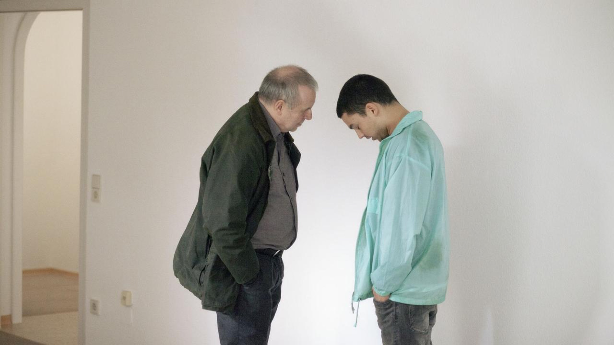
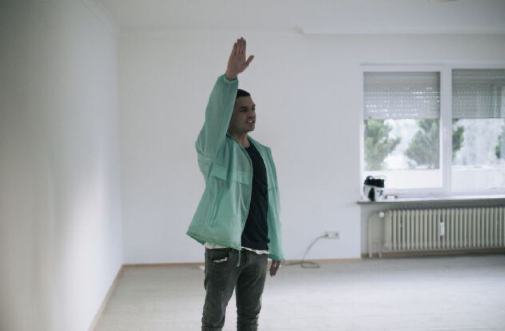
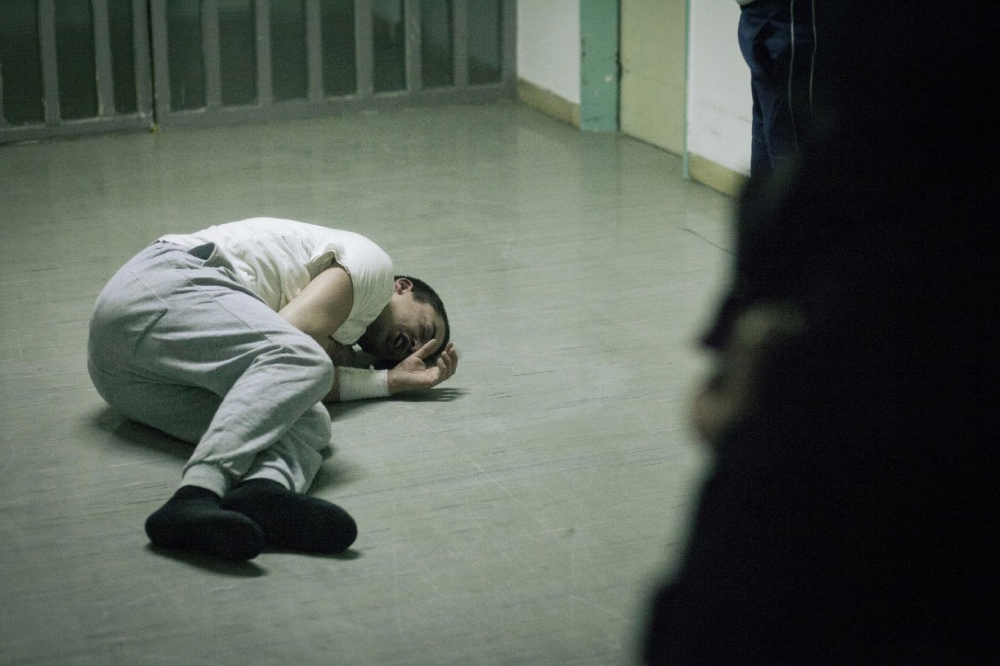
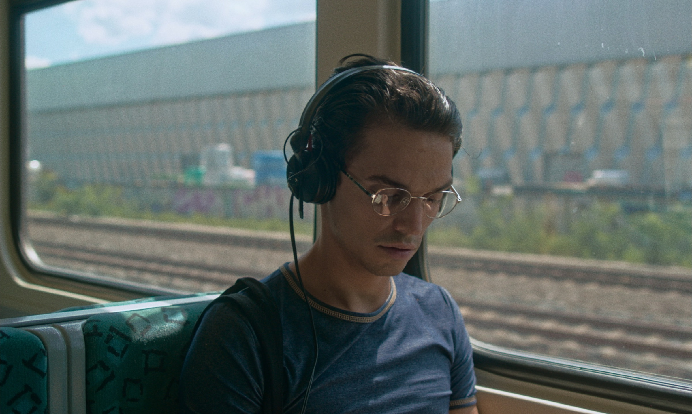

Screen
A screen actor with lead credits across German public television, streaming and film-school features, first noticed as Farim in Jan Bonny's Polizeiruf 110.
Works in German, Swiss German and English. Showreel through Agentur Schneider.




Selected
2017Polizeiruf 110 – Das Gespenst der FreiheitFarim, lead · ARD, dir. Jan Bonny
Deutscher Schauspielpreis 2019, nomination Best Newcomer
Deutscher Schauspielpreis 2019, nomination Best Newcomer
2023The Grimm RealityHänsel, lead · Netflix, dir. Sven Bohse
2024Herr L.Philipp L., lead · HFF München / BR, dir. Ivan Dubrovin
2025Der Kroatien-Krimi: Mord am JadroMiran · ARD, dir. Carolina Hellsgård
Complete
| 2025 | Der Kroatien-Krimi: Mord am Jadro, Miran | ARD, dir. Carolina Hellsgård |
| 2024 | Herr L., Philipp L. (lead) | HFF München / BR, dir. Ivan Dubrovin |
| 2023 | The Grimm Reality, Hänsel (lead) | Netflix, dir. Sven Bohse |
| 2023 | Der totale Traum, Romeo | dir. Roman Toulany |
| 2023 | Morden im Norden – Niemandsland | ARD, dir. Christoph Eichhorn |
| 2022 | Tańcząca chmura, short | Łódź Film School, dir. Platon Ogareov |
| 2021 | Die Heiland – Wir sind Anwalt: Brandstiftung | ARD, dir. Oliver Schmitz |
| 2021 | SOKO Köln – Party bis zum bitteren Ende | ZDF, dir. Ulrike Hamacher |
| 2021 | Ununterbrochen reden, short | dir. Frédéric Jaeger |
| 2021 | Der Geruch von nassem Stein, short | dir. Moritz Buchmann |
| 2020 | Nicht nur Körper, Levi (lead), short | UdK Berlin, dir. Frédéric Jaeger |
| 2019 | Der gute Bulle – Nur Tote reden nicht, Don Quixote | ZDF / Arte, dir. Lars Becker |
| 2019 | Blind ermittelt, Uli | ORF, dir. Jano Ben Chaabane |
| 2018 | Beats, Sefi (lead), short | HFF München, dir. Simon Pfister |
| 2017 | Polizeiruf 110 – Das Gespenst der Freiheit, Farim (lead) | ARD, dir. Jan Bonny |